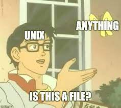

One of first computers
Perfocards, used to deliver commands to computer
Dennis Ritchie and Ken Thompson
Douglass McIlroy and Dennis Ritchie
Ken Thompson
Unix file system remains unchanged

C language logo

Terminal VT-100
BSD logo

Richard Stallman

Gnu logo
Andrew Tanenbaum
Linus Torvalds

Linux logo
Main differences of Unix and Windows:
- Kernel Type
- Philosophy and Design
- File System
- Command Line Interface
- Software Compatibility
- Open Source vs. Proprietary
- Hardware Support
- Graphical User Interface
- Security Model
Kernel Type
Unix-like systems use a monolithic kernel, where most of the operating system's services run in kernel space, tightly integrated with the core operating system.
Windows, on the other hand, uses a hybrid kernel, which is a mix of monolithic and microkernel designs. It aims to combine the performance of a monolithic kernel with the modularity of a microkernel.
Philosophy and Design
Unix-like systems are known for their philosophy of "everything is a file." In Unix, devices, directories, and even hardware are represented as files, accessible through the file system.
Windows follows a more object-oriented approach, providing an extensive set of APIs and frameworks for developers to build applications with graphical user interfaces.
File System
Unix-like systems typically use various file systems like ext4 (Linux), HFS+ (macOS), and ZFS (FreeBSD).
Windows primarily uses the NTFS (New Technology File System) as its default file system, which supports features like file and folder permissions, encryption, and compression.
Command Line Interface
Unix-like systems have a powerful command-line interface (CLI) often accessed through a terminal (e.g., Bash shell). These systems have a long-standing tradition of using text-based commands to perform various tasks.
While Windows also has a command-line interface (Command Prompt and PowerShell), historically, its graphical user interface (GUI) has been more emphasized.
Software Compatibility
Unix-like systems are more popular for server environments and are prevalent in the world of web hosting, cloud services, and supercomputing.
Windows has a strong presence in desktop computing and is widely used for personal computers, gaming, and enterprise environments.
Open Source vs Proprietary
Many Unix-like operating systems are open-source (e.g., Linux, FreeBSD), allowing users to access and modify the source code. This fosters a large community of developers contributing to improvements and innovations.
Windows is a proprietary operating system developed by Microsoft, and its source code is not publicly available.
Hardware Support
Unix-like systems are known for their excellent hardware support, especially on servers and for a wide range of devices. Linux, in particular, has extensive hardware compatibility.
Windows, as a commercial operating system, has strong support from hardware manufacturers and is generally well-supported on mainstream desktops and laptops.
Graphical User Interface
Unix-like systems offer different desktop environments like GNOME, KDE, and Xfce, providing flexibility and choices for users.
Windows has its own distinctive graphical user interface, with the Start menu, taskbar, and window management features.
Licensing
Unix-like systems typically use various open-source licenses (e.g., GPL, BSD) that allow users to use, modify, and distribute the software freely.
Windows is a commercial product, and its usage is governed by Microsoft's licensing terms.
Security Model
Unix-like systems have a well-established security model with file permissions, users, and groups, making it relatively secure out of the box.
Windows has evolved its security over time and includes features like User Account Control (UAC) to prevent unauthorized changes.
And some memes about Unix:

Ten Essential Unix Commands
| Command | Example | Usage |
|---|---|---|
| man | man pwd | The '$ man' command stands for 'manual' and it can display the in-built manual for most of the commands that we ever need. |
| cd | cd newfolder | The '$ cd' command stands for 'change directory' and it changes your current directory to the 'newfolder' directory. |
| ls | ls | The 'ls' command simply displays the contents of a directory. |
| clear | clear | The '$ clear' command is used to clean up the terminal so that you can type with more accuracy |
| touch | touch notations.txt | The '$ touch' command simply creates a file. |
| mkdir | mkdir newFolder | The '$ mkdir' command creates a new folder with specified name |
| rmdir | rmdir newFolder | The '$ mkdir' command does opposite - removes a folder with specified name |
| cp | cp /home/folder/file.txt /home/anotherFolder | This '$ cp ' command stands for 'copy' and it simply copy/paste the file wherever you want to. |
| rm | rm file.txt | The '$ rm ' command for remove and the '-r' simply recursively deletes file. |
| mv | mv /home/folder/file.txt /home/anotherFolder | The '$ mv' command stands for 'move' and it simply move a file from a directory to another directory. |